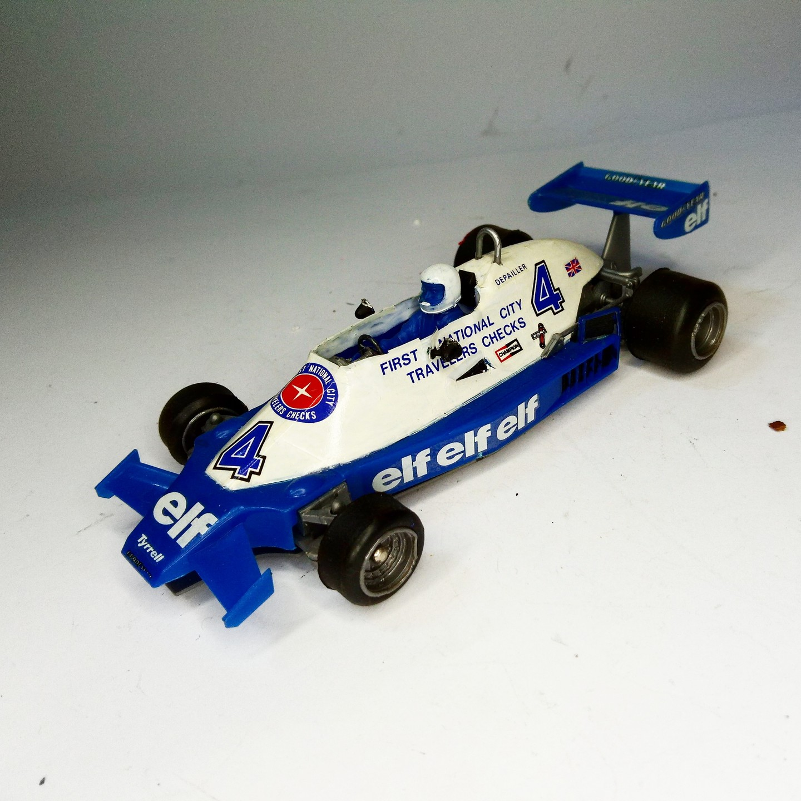
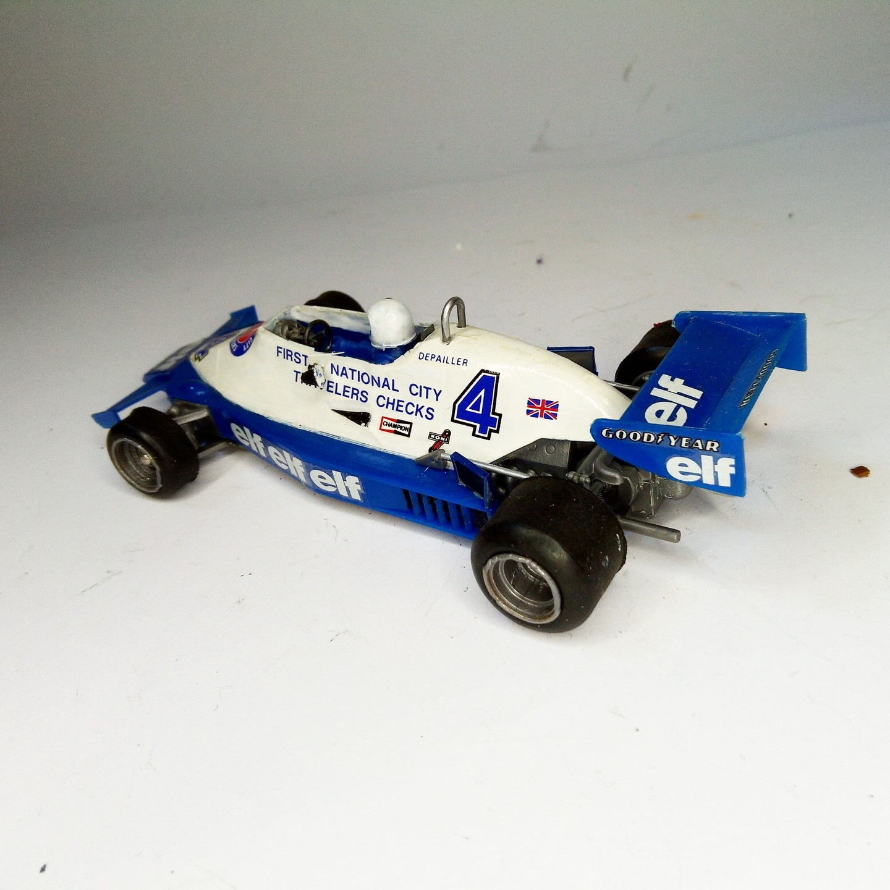

Auto e veicoli stradali · scale model archive
Tyrrell 008
Tyrrell 008 — Kit: Scale: 1/28, Scale: 1/28. Raced in 1978 F1 season #1/28 #Tyrrell008

Photo gallery

English description
Raced in 1978 F1 season
#1/28 #Tyrrell008
Descrizione italiana
Corse nella stagione di Formula 1 1978.